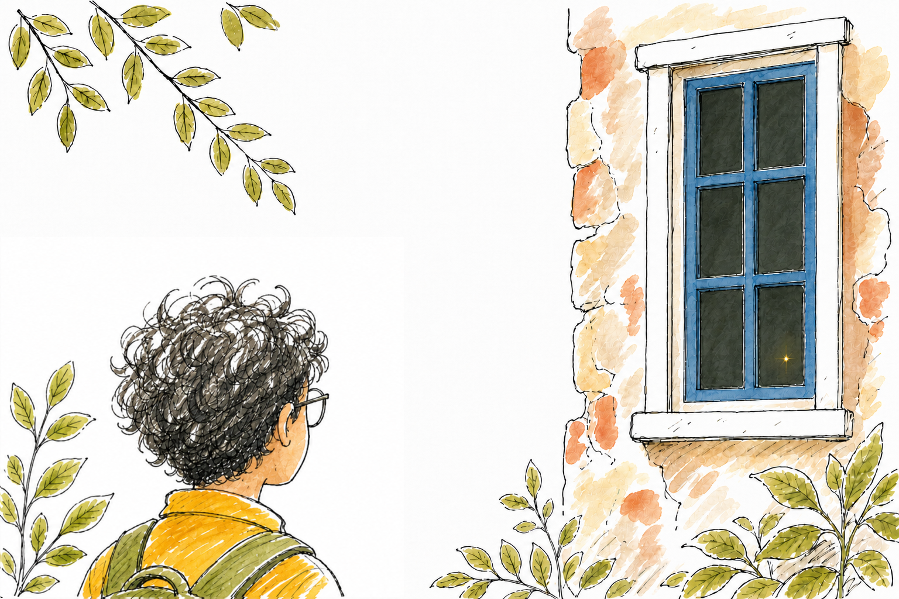

Chapter 3 — The Spark And The Forgotten Ledger
≈ 2,600 words · 9 to 11 minutes read
Friday night is board games at our house, and Ved was staying over.
Thatha wandered in right in the middle of Ved's turn and started holding court on Vaastu again. Somehow, since Tuesday, he had transformed into a supreme expert on the vaastu rules. He grandly announced that the ancient masters had one sacred city they measured everything else in the world from. Ujjain, he proclaimed. They anchored the absolute center of the world at Ujjain.
Ved stopped with a tiny plastic hotel pinched in his hand and said, "Where's Ujjain?"
We dragged out the heavy atlas from Dad's shelf. Then Ved sprang up, his thumb rested squarely on the dotted printed line that slices across the middle of India.
Ujjain sat on it. Not near it. Directly on it—as close as a thumb can possibly tell.
It was the boundary we had found on Deepa Ma'am's globe. We had somehow imagined it running above India. Instead it cut straight through eight states, under Bhopal and just above Kolkata. Rajgudi sat far below it.
"It's almost exactly on it," said Ved, his thumb still pressing down on the paper. "Almost."
Suma gently took the atlas out of his hands and stared at it for a long, quiet time.
"I was right about the panels across a whole year," she said. "I answered a different question."
"You did use an entire roof," Ved said.
Suma threw a missing hotel at him. Case reviewed.
Saturday morning, we abandoned all pretense. Morning, Narayanajja; how is the tea—"It is nine o'clock in the morning"—and we marched straight through the side door.
Ved went hunting for the elusive prism. Anya and I lost ourselves in the hand-drawn maps and the intricate brass instruments. Suma went straight back to the notebooks, because she was still stubbornly chasing the secret of the solar panels, though I noticed she kept one wary eye on the shadowy shelf where the light had been.
I thought I saw it twice. Once hovering at the end of a dusty row of encyclopedias, and once pulsing near the heavy drapes of the window. Both times, it was only a flicker caught out of the very corner of my eye—which is exactly where dust motes do their most convincing work.
Then Suma spoke our names. Very quietly. Which is absolutely not how my sister says anything.
She was standing perfectly still. She had a thick book open flat on the table, and she hadn't screamed or climbed the furniture.
It was not a dense science notebook. It was a story—that was the unsettling part; I had never once imagined serious, Nobel-winning scientists sitting down to read stories, which is a foolish thing not to have imagined. It had pictures printed on the left pages and tight blocks of text on the right. The illustrations were old woodcuts, rendered in harsh, jagged knife-lines and deep black ink. The thick paper was mottled with brown blotches, like someone had carelessly rested a dripping coffee cup on it a century ago. Our art teacher forces us to try and fake that effect with wet tea bags to make fresh paper look ancient, and I have never once managed to make it look half this authentic.
There was a faint, yellowish light sitting directly on the open page.
And there, perfectly mirrored in the ancient woodcut—carved deep into the wooden block, printed, and left to dry a hundred years ago—was the exact same shape. It was a small firefly, standing upright, sporting two tiny peaks on its head that looked like the letter M, and its feet were encased in shoes that were far, far too small for it to have traveled any real distance at all.
The living light and the dead one printed beneath it lined up exactly. Same two peaks. Same absurd little shoes. Not similar—the same, the way your reflection is the same as you, matched line for line, as though the bug had been sitting for its portrait a hundred years before it was born, or the woodcut had been waiting all this time for something to come and stand on it.
Nobody breathed. Anya's hand found my sleeve and closed on it. The back of my neck went cold and tight, the specific animal cold of being certain, without any proof at all, that something in the room had just quietly turned to look at us. Then the light on the page winked out—not flew, not faded, just stopped, the way a word stops when you finish saying it—and the woodcut firefly sat there alone on the brown-blotched paper, exactly where it had always been, exactly where the living one had just been, holding perfectly still and looking, I would have sworn, faintly pleased with itself.
We did not scream. We walked—too fast, too close together, nobody willing to be the one at the back—out the side door, down the drive, past Narayanajja and his broom, and straight home, and we did not say a single word until we were three houses clear of the gate.
And then we could not stop saying words.
Because here is the thing about running away: your feet leave, but the two questions come with you and will not get out of your head. First—how. A firefly that was alive this June, this Saturday, on this page, was cut into a block of wood a hundred years before any of us existed, down to the ridiculous shoes. Either that was the most staggering coincidence in the history of coincidences, or that book had somehow gotten there first. Neither answer let me sleep.
And second, quieter but somehow worse: it wasn't a science book. Sir B. W. Sawan had a whole wall of notebooks, a lifetime of measuring the actual world down to the millimeter—and the one book left lying open on his table, the one the impossible firefly had chosen to sit on, was a story. A made-up thing, with woodcuts and villains and, presumably, an ending. The most careful measurer of real things in the country had spent his last quiet hours reading something that never happened. I could not make those two facts share a shelf in my head.
For the rest of that day the thought of the shadowy study gave me a genuine cold jolt in the stomach, and twice that night I dreamed the little printed bug turned its head.
And we were, every one of us, going back. Not just for the prism anymore. For the book.
Sunday is my twelve hours of uninterrupted sleep. Sunday is sacred.
Anya pounded on the door at ten in the morning. Mum, a traitor, let her in. I was still blissfully horizontal when Anya stormed into my room and yanked the blanket off.
"We didn't finish it," she said, breathing hard as though she had run all the way.
"Finish what?" I mumbled into the pillow. "We ran away from a ghost bug. That felt pretty finished to me." But the book had been chewing at me all night. It was Sunday. "Whatever it is, it can wait till I've slept."
"Narayanajja's pots. He moved all of them."
"I know. You were there."
"But if he moves all of them," she said, pacing the narrow space between my bed and the desk, "how does he know it's the sun?"
I sat up slowly, my brain finally deciding to boot up. "What else would it be?"
"It's been brutally hot all month," she said, ticking it off on her fingers. "There hasn't been a drop of rain. The city's water is half empty. If the calatheas die now, is it because they're on the wrong side of the house, or because there's a drought?"
I did not have an answer. I got up, which is not the same thing, and she took it as one.
She hauled me out of bed, loudly refused Mum’s offer of hot breakfast on my behalf, collected Suma off the living room sofa, and marched us all to Ved's gate.
When she demanded we go back to the bungalow, I adamantly refused. She swore we wouldn't step foot inside the terrifying study—we would only talk to Narayanajja. I grudgingly yielded.
Narayanajja was sweeping dried leaves off the driveway when we marched up.
Anya didn't even say good morning. "You need to move one hibiscus pot back," she told him. "Just a single one. And one calathea pot. Move them back to exactly where they were on Monday."
Narayanajja leaned on his broom and stared at her with the blank expression of a man who has just been asked to water a rock. "Why?" he asked.
Ved got it first. I saw the realization arrive in his face.
"If every plant moves," he said, "how will we know what caused the change?"
Suma nodded, stepping up beside Anya. "Suppose all the hibiscus flower after moving into sunlight."
"Was it the new place," I said, "or was it El Nanaji?"
You have to send one back. One hibiscus that goes home to the shade where it never flowered, and one calathea that goes back out into the sun to keep on burning. Then, when the others do better or worse, there is something to hold them against, and the heat and the missing rain stop quietly taking the credit.
"One plant gets to do nothing all summer," Ved said. "I volunteer."
Narayanajja did not laugh, and he did not move. He looked for a long moment at the one calathea we were asking him to carry back out into the sun that had been cooking it. It had four leaves left that weren't brown.
"Sahebru gave me one job," he said. "You are giving me two. No."
And that was that. He picked up his broom. Four children who had solved the whole of geography that week stood on a driveway and could not get one flowerpot moved, because the only person who could move it had been given his instructions by a man who was right about everything and had been dead for fifty years.
So Anya stopped arguing and offered him something instead.
"Next time," she said, "We'll tell you the exact day to move them. Not six months. The actual day. No more burnt plants."
Narayanajja turned round.
"There is an exact day?"
And I said we needed the stick.
Because if the blazing sun really does walk across the sky, then it is moving right now, a tiny bit further every single day, and in a fortnight it turns round and starts back. And you can trap it and measure it. You hammer a perfectly straight stick into flat ground, you mark the tip of its shadow at the shortest point of the day, and you do it again tomorrow, and again, and the chalk marks crawl slowly across the dirt. It isn't a clock. Nobody in Rajgudi needs another clock. It is a calendar—the shadow of the stick tells you exactly where in the vast year you are standing.
We worked the rest of it out on Narayanajja's dusty step, armed with four kids, a heavy atlas and the blank back pages of Ved's diary. It took most of the morning, involved two fierce arguments, and required Suma to check the arithmetic twice, out loud, at us.
The midday shadow is short right now, and it points stubbornly south, and it has been getting a little longer every day since we dragged ourselves back to school. It will keep growing until Thatha's longest day. Then the sun turns, and the shadow starts coming back—shorter, and shorter—until one day in the middle of August the stick will stand in the flat white light and cast nothing at all.
Nothing. Not a short shadow. None.
And the day after that it reappears on the other side, pointing north, and grows all the way to Christmas.
That zero day is the exact moment the scorching light on the front of the house crosses over to the back.
Thatha had the walk right. The sun really does set off south on the longest day, exactly as he said. What he had folded up and put away without ever looking at it too closely was which way the light falls while it walks—because here, for eight more weeks after it turns, the sun is strolling south and still leaning over us from the north. The way you can be walking toward a door and still looking back into the room.
The zero day, then. Not a date anybody could hand us—one the stick has to tell us itself.
We needed somewhere to keep it all. Ved triumphantly announced he had a field book: a neglected diary from two Christmases ago with exactly three days used.
"Two Christmases," said Suma, taking it off him. "Three pages." She was already writing on the cover.
Narayanajja stood there and listened to this entire chaotic presentation without uttering a single word. He is not a man prone to dramatic outbursts in front of children.
Then he checked the terms, once, the way you check a price.
"Every weekend. The plants and the shadow. Until the stick tells you the day."
"Every weekend," said Suma.
He did not say yes. He bent down, picked up the burnt calathea—the one he had refused ten minutes earlier—and carried it out to the hot side of the house and set it down in the sun.
Then, very softly, he said: "Sahebru had a walking stick."
And he turned and walked around the side of the grand house to search the sheds for it.
They were all excitedly shouting over each other by then—Anya demanding where we should plant the stick, Ved arguing about how to find true midday when your digital watch is inaccurate, Suma lecturing about which page of the diary was meant for which plant—everyone excitedly finishing everyone else's sentence, and nobody bothering to finish their own.
So, in the chaos, I was the only one left facing the house.
There was a light glowing in the heavy glass of the study window. It wasn't the dim orange of the old bulbs; we hadn't gone inside to flip the heavy switches. It was small, steady, and intensely yellowish, sitting patiently on the inside of the pane, looking out over the garden. It looked far brighter than it had yesterday in the dark, which made no logical sense at all on a blindingly bright June morning.

I did not point it out. I did not say a word. I am still not entirely sure why.
Should we go in?
Not today. Today, we had a stick to hammer into the earth, and a pot that was staying put, and a pot that was moving, and an old diary with three days used and a vast, empty year left waiting in it.
I had spent my whole life counting Sundays as the day nothing important happens.
I was going to have to start counting differently.